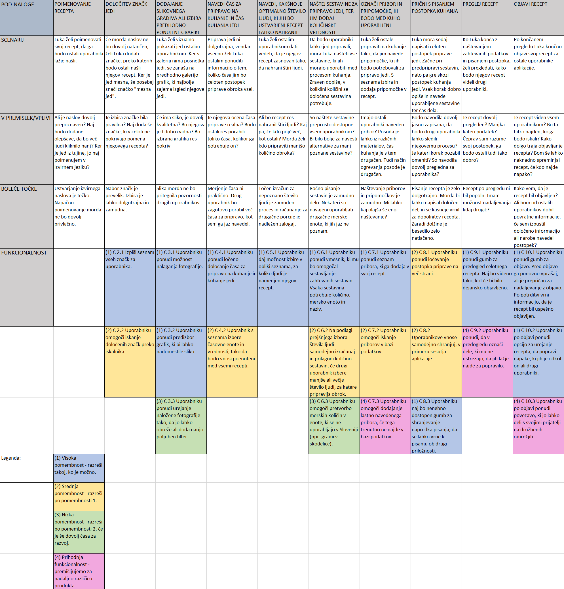

V tej nalogi se seznanjamo s procesom razčlenitve delovne analize uporabe načrtovane aplikacije. Za moj primer delovne analize sem izbral nalogo, v kateri mora uporabnik v aplikacijo objaviti svoj recept, zraven pa po korakih vnesti ustrezne podatke, da lahko te nato povezujemo z iskalniki in preferencami drugih uporabnikov. Analiza delovne naloge je zapisana v spodnji tabeli, ki je vgrajena v HTML dokument.
Naš uporabnik je Luka, študent, ki zelo rad eksperimentira v ustvarjanju hrane. S svojimi izdelki je zadovoljen sam ter tudi njegovi prijatelji, zato želi svoje znanje deliti z ostalimi. Odločil se je, da recept objavi v aplikacijo Kuharček. Od nje pričakuje preprost in ne preveč zapleten sistem uporabe, da lahko kakovostno deli svoj recept s širnim svetom.
